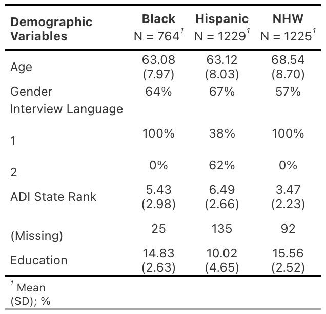
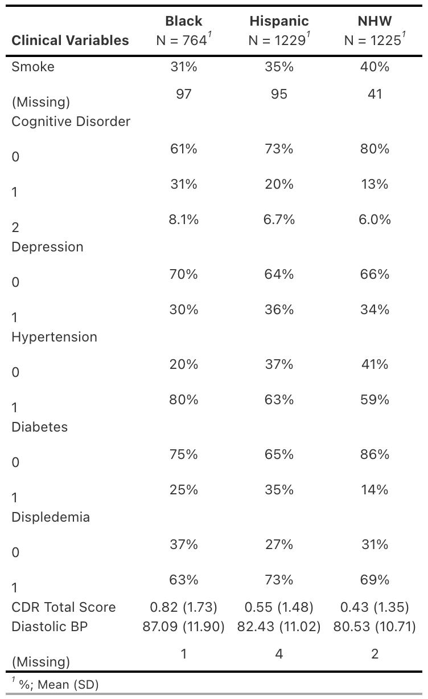
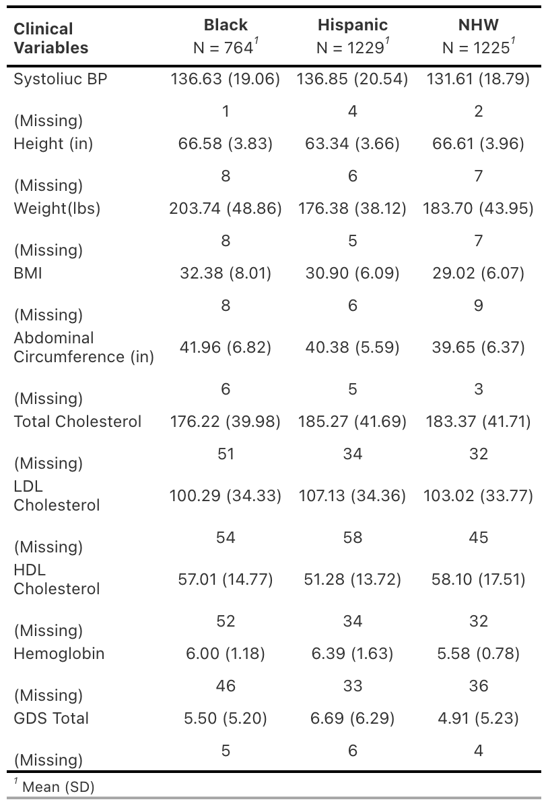
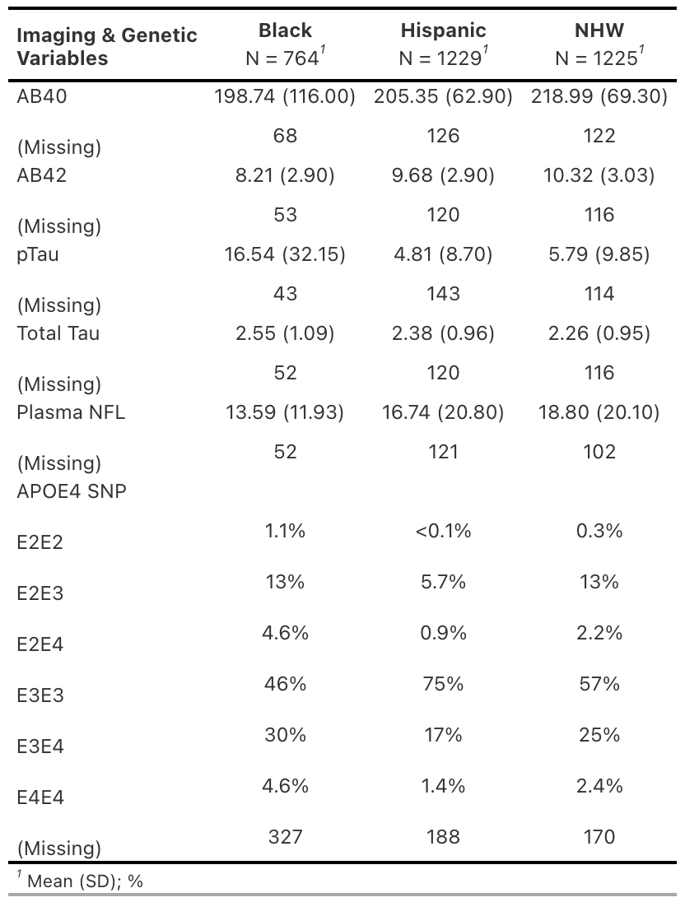

Import Packges
library(tidyverse)
setwd('~/gitcode/IntroGeneticEpi/')
SAVE_VISUALIZATIONS_PATH <- "results/figures"We will be using Health and Aging Brain Study-Health Disparities (HABS-HD) as an example data for conducting genome-wide assocation studies. Phenotypic and genetic data will be shared via Box.
library(tidyverse)
setwd('~/gitcode/IntroGeneticEpi/')
SAVE_VISUALIZATIONS_PATH <- "results/figures"aa_v1_path = 'resources/HABSHD/v5/HD 1 African American 50+ Request 355.csv'
ma_v1_path = 'resources/HABSHD/v5/HD 1 Mexican American 50+ Request 355.csv'
nhw_v1_path = 'resources/HABSHD/v5/HD 1 Non-Hispanic White 50+ Request 355.csv'
hd_cols = spec(read_csv(nhw_v1_path, guess_max = 10000))
aa_v1.raw = read_csv(aa_v1_path, col_types = hd_cols, na = c("", "NA", "9999", "-9999", "-8888", "-777777", '-888888', '-999999')) %>%
janitor::clean_names()
ma_v1.raw = read_csv(ma_v1_path, col_types = hd_cols, na = c("", "NA", "9999", "-9999", "-8888", "-777777", '-888888', '-999999')) %>%
janitor::clean_names()
nhw_v1.raw = read_csv(nhw_v1_path, col_types = hd_cols, na = c("", "NA", "9999", "-9999", "-8888", "-777777", '-888888', '-999999')) %>%
janitor::clean_names()
habshd.raw <- bind_rows(
aa_v1.raw, ma_v1.raw, nhw_v1.raw
) %>%
mutate(
id_race_white = as.factor(id_race_white),
id_race_black = as.factor(id_race_black),
id_race_indian_alaska = as.factor(id_race_indian_alaska),
id_race_asian = as.factor(id_race_asian),
id_race_japanese = as.factor(id_race_japanese),
id_race_korean = as.factor(id_race_korean),
id_race_vietnamese = as.factor(id_race_vietnamese),
id_race_native_hawaiian = as.factor(id_race_native_hawaiian),
id_race_guam_chamorro = as.factor(id_race_guam_chamorro),
id_race_samoan = as.factor(id_race_samoan),
id_race_other_pacific = as.factor(id_race_other_pacific),
id_race_other = as.factor(id_race_other),
id_hispanic = as.factor(id_hispanic),
id_hispanic_other = as.factor(id_hispanic_other),
race = case_when(
id_hispanic != 1 ~ "Hispanic",
id_race_white == 1 & id_hispanic != 2 ~ "NHW",
id_race_black == 1 ~ "Black",
TRUE ~ "Other")
)habshd <- habshd.raw %>%
mutate(
abeta40 = ifelse(is.na(r3_qtx_plasma_abeta42), r5_qtx_plasma_abeta40, r3_qtx_plasma_abeta40),
abeta42 = ifelse(is.na(r3_qtx_plasma_abeta42), r5_qtx_plasma_abeta42, r3_qtx_plasma_abeta42),
ptau181 = ifelse(is.na(r3_qtx_plasma_p_tau181), r5_qtx_plasma_p_tau181, r3_qtx_plasma_p_tau181),
total_tau = ifelse(is.na(r3_qtx_plasma_total_tau), r5_qtx_plasma_total_tau, r3_qtx_plasma_total_tau),
nfl = ifelse(is.na(r3_qtx_plasma_nf_l), r5_qtx_plasma_nf_l, r3_qtx_plasma_nf_l)
) %>%
select(med_id, age, id_gender, interview_language, adi_state_rank, race,
id_education, smoke_ever, cdx_cog, cdx_depression,cdx_hypertension,
cdx_diabetes, cdx_dyslipidemia, cdr_sum,
om_bp1_dia, om_bp1_sys,
om_height, om_weight, om_bmi, om_ab_circumference,
bw_chol_total, bw_ld_lchol, bw_hdl_chol, bw_hba1c, gds_total,
abeta40, abeta42, ptau181, total_tau, nfl,
apoe4_snp
)
write_csv(habshd, "work/habshd_pheno.csv")#descriptive table
description <- c("Medical ID","","1 = Female <br> 0 = Male",
"Language in which <br> interview was administered",
"Area Deprivation Index",'Black, Hispanic, NHW',
"Years of Education","Ever Smoked<br> (1:Yes, 0:No)",
"Cognitive Disorder:<br> 0: Cognitively Unimpaired <br>1:Mild Cognitive
Impairment<br>2: Dementia", "Depression<br> (1:Yes, 0:No)",
"Hypertension <br> (1:Yes,0:No)", "Diabetes <br> (1:Yes,0:No)",
"High Cholesterol (1:Yes,0:No)",
"Clinical Dementia Rating (CDR):<br> Sum of Boxes",
"Diastolic BP", "Systolic BP", "Height (in)", "Weight (lbs)",
"BMI", "Abdominal circumference (in)", "Total Cholesterol",
"LDL Cholesterol<br> (bad)","HDL Cholesterol<br> (good)",
"Hemoglobin","Geriatric Depression Scale (GDS)",
"abeta40","abeta42","ptau181", "total_tau","nfl",
"APOE Genotype")
table_desc <- data.frame(cbind(names(habshd), description))
table_desc %>% kbl(caption = '', col.names = c("Variable", "Description"),
escape = FALSE) %>%
kable_classic(full_width = FALSE, html_font = "Ariel") %>%
kable_styling(font_size = 16, position = "center") %>%
column_spec(1:2, border_left = F, border_right = F) %>%
pack_rows("Demographics",1,7) %>%
pack_rows("Clinical",8,25) %>%
pack_rows("Imaging",26,30) %>%
pack_rows("Genomics",31,31) | Variable | Description |
| Demographics | |
| med_id | Medical ID number Not an MRN |
| age | Age (yrs) |
| id_gender | 1:Female 0: Male |
| interview_language | Language in which interview was administered 1:English 2:Spanish |
| adi_state_rank | Area Deprivation Index Levels: 1,2,..,10 1: least disadvantaged 10: most disadvantaged |
| race | Black, NHW, Hispanic |
| id_education | Years of Education |
| Clinical | |
| smoke_ever | Ever smoked? 0:No 1:Yes |
| cdx_cog | Cognitive Disorder 0: Cognitively Unimpaired 1:Mild Cognitive Impairment 2: Dementia |
| cdx_depression | Depression 0:No 1:Yes |
| cdx_hypertension | Hypertension 0:No 1:Yes |
| cdx_diabetes | Diabetes 0:No 1:Yes |
| cdx_dyslipidemia. | High Cholesterol 0:No 1:Yes |
| cdr_sum | Clinical Dementia Rating (CDR) Sum of Boxes |
| gds_total | Geriatric Depression Scale (GDS) sum of GDS 1 to GDS 30 |
| om_bp1_dia | Diastolic BP |
| om_bp1_sys | Systolic BP |
| om_height | Height (in) |
| om_weight | Weight (lbs) |
| om_bmi | Body Mass Index (BMI) |
| om_ab_circumference | Abdominal Circumference (in) |
| bw_chol_total | Total Cholesterol (mg/dL) |
| bw_ld_lchol | LDL Cholesterol (mg/dL) (bad) |
| bw_hdl_chol | HDL Cholesterol (mg/dL) (good) |
| bw_hba1c | Hemoglobin A1C% of total Hgb |
| Biomarkers | |
| abeta40 | \(A\beta_{40}\) |
| abeta42 | \(A\beta_{42}\) |
| ptau181 | Phospho-Tau (pg/mL) Average CV: 0.07065 Avgerage LLOD: 0.016 Average HLOD:349 |
| total_tau | Total Tau |
| nfl | Neurofilament Light (pg/mL) Average CV: 0.038 Avgerage LLOD: 0.038 Average HLOD:1800 |
| Genetics | |
| apoe4_snp | APOE Genotype E2E3, E2E4, E3E3, E3E4, E4E4 |
habshd[which(habshd$adi_state_rank=="GQ"),] <- NA
habshd[which(habshd$adi_state_rank=="PH"),] <- NA
habshd[which(habshd$adi_state_rank=="Invalid Address"),] <- NA
habshd[which(habshd$smoke_ever==2),] <- NA
habshd$adi_state_rank <- as.integer(habshd$adi_state_rank)
theme_gtsummary_compact()
demographics_table <- habshd %>% select(age,id_gender,interview_language,
adi_state_rank, race, id_education) %>%
tbl_summary(., by = race,
statistic = list(
all_continuous() ~ "{mean}<br> ({sd})",
all_categorical()~ "{p}%"),
digits = all_continuous()~2,
label = c(age~"Age", id_gender ~ "Gender",
interview_language ~ "Interview Language",
adi_state_rank~ "ADI State Rank",
id_education~"Education"),
missing_text = "(Missing)") %>%
modify_header(label = "**Demographic <br> Variables**",
all_stat_cols() ~ "**{level}**<br> N = {n}") %>%
as_gt() %>%
tab_options(column_labels.border.top.color = "black",
column_labels.border.bottom.color = "black",
table_body.border.bottom.color = "black",
table_body.hlines.color = "white",
table.font.size = 12,
container.width = 500,
container.height =500) %>%
fmt_markdown(columns = everything())
gtsave(demographics_table,filename = file.path(SAVE_VISUALIZATIONS_PATH, "demographics_summary.png"))
#convert to factors
cdx_cols <- names(habshd %>% select(starts_with("cdx_")))
habshd[cdx_cols] <-lapply(habshd[cdx_cols], factor)
clinical_table1 <- habshd %>% select(smoke_ever,cdx_cog,cdx_depression,
cdx_hypertension,cdx_diabetes,
cdx_dyslipidemia,cdr_sum, om_bp1_dia,
race) %>%
tbl_summary(., by = race,
statistic = list(
all_continuous() ~ "{mean} ({sd})",
all_categorical()~ "{p}%"),
digits = all_continuous()~2,
label = c(smoke_ever ~ "Smoke ",
cdx_cog ~ "Cognitive Disorder",
cdx_depression ~ "Depression",
cdx_hypertension ~ "Hypertension",
cdx_diabetes ~ "Diabetes",
cdx_dyslipidemia ~ "Displedemia",
cdr_sum ~ "CDR Total Score",
om_bp1_dia ~ "Diastolic BP"),
missing_text = "(Missing)") %>%
modify_header(label = "**Clinical Variables**",
all_stat_cols() ~ "**{level}**<br> N = {n}") %>%
as_gt() %>%
tab_options(
column_labels.border.top.color = "black",
column_labels.border.bottom.color = "black",
table_body.border.bottom.color = "black",
table_body.hlines.color = "white",
table.font.size = 12,
container.height = 700,
container.width = 700) %>%
fmt_markdown(columns = everything())
gtsave(clinical_table1,filename = file.path(SAVE_VISUALIZATIONS_PATH, "clinical_table1.png"))
clinical_table2 <- habshd %>% select(om_bp1_sys,om_height,om_weight,
om_bmi,om_ab_circumference,bw_chol_total,
bw_ld_lchol,bw_hdl_chol,race,bw_hba1c,
gds_total,race) %>%
tbl_summary(., by = race,
statistic = list(
all_continuous() ~ "{mean} ({sd})",
all_categorical()~ "{p}%"),
digits = all_continuous()~2,
label = c(om_bp1_sys~"Systoliuc BP",
om_height ~ "Height (in)",
om_weight~ "Weight(lbs)",
om_bmi ~"BMI",
om_ab_circumference~ "Abdominal <br>
Circumference (in)",
bw_chol_total ~ "Total Cholesterol",
bw_ld_lchol~ "LDL <br> Cholesterol",
bw_hdl_chol~ "HDL <br> Cholesterol",
bw_hba1c~ "Hemoglobin",
gds_total ~ "GDS Total"),
missing_text = "(Missing)") %>%
modify_header(label = "**Clinical <br> Variables**",
all_stat_cols() ~ "**{level}**<br> N = {n}") %>%
as_gt() %>%
tab_options(
column_labels.border.top.color = "black",
column_labels.border.bottom.color = "black",
table_body.border.bottom.color = "black",
table_body.hlines.color = "white",
table.font.size = 12,
container.height = 700,
container.width = 700) %>%
fmt_markdown(columns = everything())
gtsave(clinical_table2,filename = file.path(SAVE_VISUALIZATIONS_PATH, "clinical_table2.png"))
habshd$apoe4_snp = as.factor(habshd$apoe4_snp)
imaging_genetics_table <- habshd %>% select(abeta40, abeta42,ptau181, total_tau,
nfl, apoe4_snp,race) %>%
tbl_summary(., by = race,
statistic = list(
all_continuous() ~ "{mean} ({sd})",
all_categorical()~ "{p}%"),
digits = all_continuous()~2,
label = c(abeta40~"AB40",
abeta42~"AB42",
ptau181 ~ "pTau",
total_tau ~ "Total Tau",
nfl~ "Plasma NFL",
apoe4_snp ~ "APOE4 SNP"),
missing_text = "(Missing)") %>%
modify_header(label = "**Imaging & Genetic <br>
Variables**",
all_stat_cols() ~ "**{level}**<br> N = {n}") %>%
as_gt() %>%
tab_options(
column_labels.border.top.color = "black",
column_labels.border.bottom.color = "black",
table_body.border.bottom.color = "black",
table_body.hlines.color = "white",
table.font.size = 12,
container.width = 700,
container.height =700) %>%
fmt_markdown(columns = everything())
gtsave(imaging_genetics_table,filename = file.path(SAVE_VISUALIZATIONS_PATH, "imaging_genetic_table.png"))    
Samples in HABS-HD were genotyped on the Illumina GSA array. These files have undergone basic variant and sample QC and then imputed on using the TOPMed imputation server. I have then filtered the imputed files to only HapMap III SNPS to make
Download the hapmap_3.3.hg38.vcf.gz file from the Broad’s google bucket
bcftools view -i 'AF > 0 && TYPE="snp" && N_ALT=1' resources/genetic_epi/resources_broad_hg38_v0_hapmap_3.3.hg38.vcf | \
bcftools view -H > work/hapmap3_snps.txthm3.raw <- read_table("work/hapmap3_snps.txt", col_names = F)
hm3 <- hm3.raw %>%
mutate(
cpra = glue::glue("{X1}:{X2}:{X4}:{X5}"),
X1 = as.numeric(str_replace(X1, 'chr', ''))
) %>%
filter(!is.na(X1)) %>%
rename(chr = X1, pos = X2, rsid = X3, ref = X4, alt = X5) %>%
select(-X6)
out <- hm3 %>%
distinct(cpra, .keep_all = T) %>%
distinct(rsid, .keep_all = T)
out %>%
select(cpra) %>%
write_tsv(., 'work/hm3_extract.txt', col_names = F)
out %>%
select(cpra, rsid) %>%
write_tsv(., 'work/hm3_crpa_rsid.txt', col_names = F) plink \
--bfile resources/HABSHD/genotypes/all \
--keep-allele-order \
--extract work/hm3_extract.txt \
--make-bed \
--out work/habshd_hm3
plink \
--bfile work/habshd_hm3 \
--keep-allele-order \
--update-name work/hm3_crpa_rsid.txt \
--make-bed \
--out work/habshd_rsid